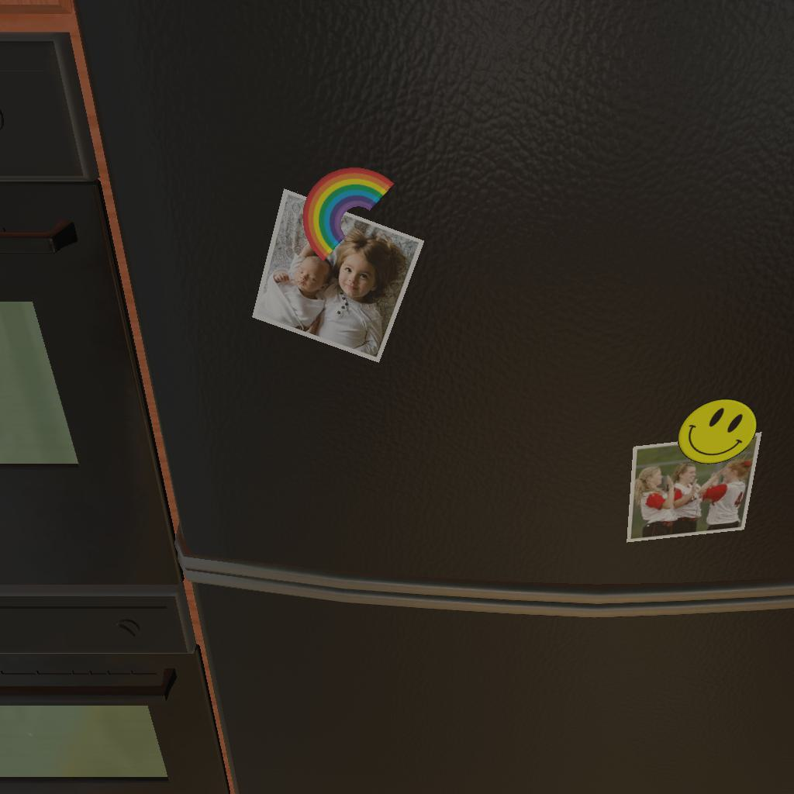

---------------------------------------------------------task: 15---------------------------------------------------------
--------------------------------------------------------------------------------------------------------------------------------------------------------------------
--------------------------------------------------------------------------------------------------------------------------------------------------------------------
Step:--------------------------------------------------------------------------12-------------------------------------------------------------------------------
----------------------------------------
VLM Prompt:
Image1:
Image2:
Image3:
**Instruction**
1. Analyze the provided images to identify all visible household objects and compare the difference between images (e.h. whether the object is opened or not and taken on hand or not), focusing on those relevant to the task description "put a cool mug in coffeemachine."
2. Use the analysis of images and the task hint "The agent must find an object of the desired type, pick it up, go to a fridge, cool the object with the fridge, then find the correct location to place it, and put it down there. The agent does not need to use the fridge button or open the fridge to cool the object, and the agent just needs to do action that is "cool the object with the fridge"." to answer the question: what is the most reasonable action in the choices for the task description "put a cool mug in coffeemachine"?
3. Decide and write the answer using the template: The answer is: (i): , where i is the real number. If there is no desired object in images, search every place based on **Initial Observation** to find the object. And if no one is exactly correct, choose a similar answer.
**Initial Observation**
You are in the middle of a room. Looking quickly around you, you can see cabinet (1-15), fridge (1), countertop (1-4), drawer (1-4), microwave (1), toaster (1), coffeemachine (1), garbagecan (1), sink (1), stoveburner (1-3), sinkbasin (1)
**Answer Choices**
(1): go to cabinet 1
(2): go to cabinet 2
(3): go to cabinet 3
(4): go to countertop 1
(5): go to cabinet 4
(6): go to cabinet 5
(7): go to cabinet 6
(8): go to cabinet 7
(9): go to drawer 1
(10): go to drawer 2
(11): go to cabinet 8
(12): go to drawer 3
(13): go to cabinet 9
(14): go to cabinet 10
(15): go to drawer 4
(16): go to microwave 1
(17): go to cabinet 11
(18): go to toaster 1
(19): go to cabinet 12
(20): go to cabinet 13
(21): go to cabinet 14
(22): go to cabinet 15
(23): go to coffeemachine 1
(24): go to garbagecan 1
(25): go to countertop 3
(26): go to countertop 4
(27): go to sink 1
(28): go to stoveburner 1
(29): go to stoveburner 2
(30): go to stoveburner 3
(31): go to sinkbasin 1
(32): take mug 1 from countertop 2
(33): take saltshaker 2 from countertop 2
(34): examine countertop 2
**Answer**
Let's think step by step by following the instructions.
----------------------------------------
----------------------------------------
Original Response:
The analysis of the provided images reveals the following household objects relevant to the task description "put a cool mug in coffeemachine":
Image1 and Image2:
- There are no household objects visible in these images related to the task.
Image3:
- A coffeemachine (1) with a mug (1) in it is visible on countertop 2. Next to the coffeemachine, there is a saltshaker (2).
Comparing the differences between the images, there is no change in the state of the objects concerning being opened, taken in hand, or their positions. Since the task description involves putting a cool mug in the coffeemachine and Image3 shows a mug already in the coffeemachine, the most reasonable action would be to take the mug to cool it with the fridge. However, since the instructions state that the agent does not need to use the fridge button or open the fridge to cool the object, the next logical step is to take the mug from the coffeemachine.
Given the task description and the initial observation, it is most appropriate to interact with the mug on the countertop where the coffeemachine is located.
The answer is: (32): take mug 1 from countertop 2.
----------------------------------------
----------------------------------------
>>> Refine Original VLM Response and Get Pure Action: take mug 1 from countertop 2
----------------------------------------
-----------------------------------------------------------------
Running time: 13.044488191604614 seconds
Total Money: 8.819230000000006
-----------------------------------------------------------------
-----------------------------------------------------------------
Text Observation:You pick up the mug 1 from the countertop 2.
-----------------------------------------------------------------
UNSUCCEED